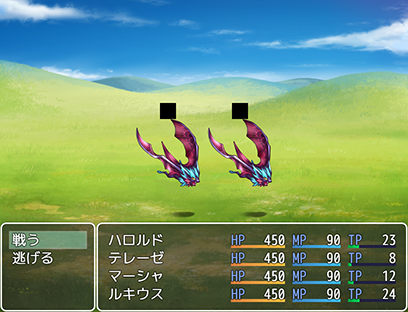

アイコンセットの画像が大きすぎると黒い四角が表示される
現象

上図のように、敵の頭上に黒い四角が表示されるケースがあります。
本来、ここはステートのアイコンが表示される領域です。
ステートアイコン
敵は何のステートにかかっていなくても、透明なアイコンが表示されています。
IconSet.pngの一番左上の領域がそのアイコンです。
そのため、左上は必ず透明にしておかなければいけません。
しかし、透明にしておいても黒い四角が表示されるケースがありました。
原因
この現象はIconSet.pngのサイズ(width, height)がWebGLで扱えるサイズを超えた場合に発生します。
このサイズはブラウザやグラフィックスボードなどに影響するので環境によって異なります。
ここのサイトにアクセスすると使っているPCのWebGLのステータスが表示されます。
このサイトのMax Texture Sizeの値が最大サイズ(width, height)です。
例えば、私のメインPCは16384ですがノートPCは8192でした。
Max Texture SizeがNだとすると、N x N が限界で、 2N x 1 は総ピクセル数は少なくても幅が限界超えているのでだめです。
限界を超えると、真っ黒画像として扱われるのでIconSet.pngの左上も真っ黒になってしまいます。
しかし、限界サイズを超えてもメッセージウィンドウなどに表示されるアイコンは黒くなりません。
これらのアイコンとステートアイコンは描画方法が微妙に異なるからです。
まずツクールはアイコン画像を一度読み込んだらキャッシュします。
メッセージウィンドウはこのキャッシュされた画像から使うアイコンを切り出し、WebGLで描画するように転送します。
一方、ステートアイコンはキャッシュされた画像をまるごとWebGL側に転送し、一部分を表示します。そのため、限界サイズを超えたアイコンセットを使うことになり、黒くなってしまいます。
なぜ、ステートアイコンだけこのような処理をしているか考えてみます。 ステートアイコンは複数の状態異常のとき一定時間ごとに切り替わります。恐らく、この処理を簡単に行うためそうしているのではないでしょうか。
まとめ
IconSet.pngはほどほどの大きさにしましょう。
ピクチャなども扱えるサイズを超えると真っ黒になるので注意が必要です。
私のノートPCが10年前のオンボードグラフィックスでかなりスペック低くてもMax Texture Sizeが8192なので、4096 ぐらいは一般的な気がしますが、安全を取ったら、2048 ぐらいなのでしょうか。